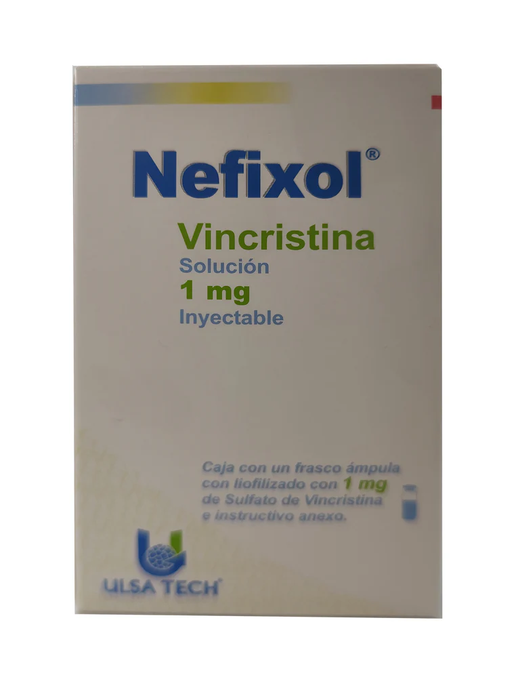
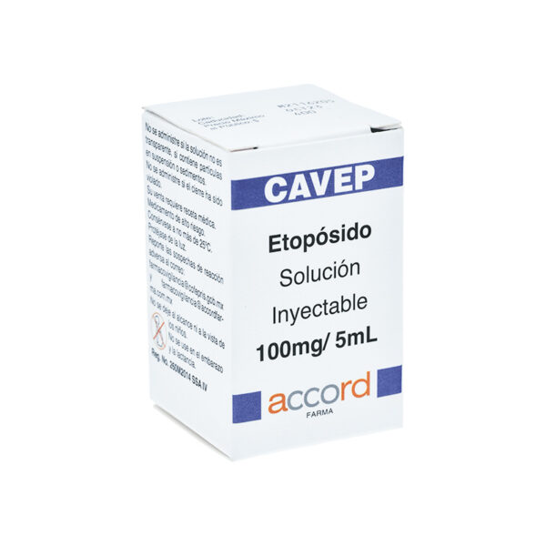
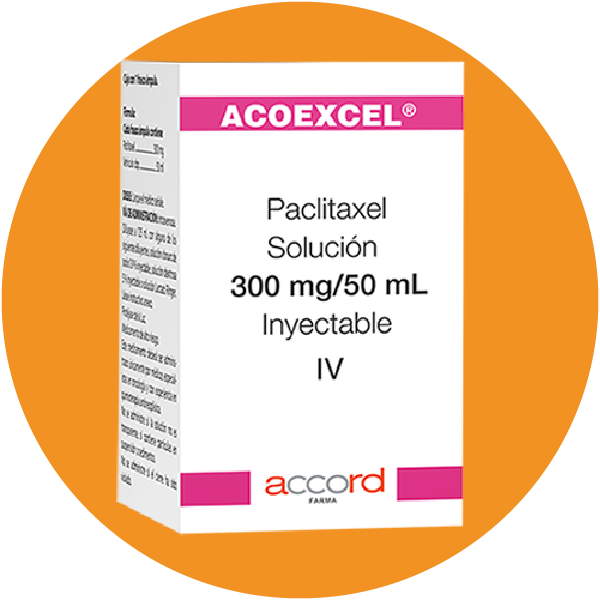

Mecanismo de Acción
- Alcaloides de la vinca (Vincristina)
Se une a la tubulina, inhibiendo la polimerización de microtúbulos en el huso mitótico, lo que impide la mitosis (fase M). Es específica de fase M.
- Epipodofilotoxinas (Etopósido)
Inhibe la topoisomerasa II, enzima necesaria para el desenrollamiento del ADN durante la replicación. Produce roturas irreparables en el ADN, deteniendo la replicación en fase S y G2.
- Taxanos (Paclitasel)
Promueve la polimerización de tubulina y estabiliza los microtúbulos, impidiendo su despolimerización. Esto bloquea la anafase y detiene la mitosis (fase M).
Indicaciones Terapéuticas
- Alcaloides de la vinca (Vincristina)
- Leucemia linfoblástica aguda (LLA)
- Linfoma de Hodgkin y no Hodgkin
- Mieloma múltiple
- Tumores sólidos pediátricos: neuroblastoma, rabdomiosarcoma, sarcoma de Ewing, tumor de Wilms
- Epipodofilotoxinas (Etopósido)
- Cáncer de pulmón de células pequeñas
- Cáncer testicular (con cisplatino y bleomicina)
- Linfoma de Hodgkin y no Hodgkin
- Leucemias agudas
- Tumores cerebrales y de ovario
- Taxanos (Paclitasel)
- Cáncer de mama (metastásico y adyuvante)
- Cáncer de ovario
- Cáncer de pulmón no microcítico
- Sarcomas, cáncer de cabeza y cuello
- Cáncer gástrico y de páncreas
Contraindicaciones
- Alcaloides de la vinca (Vincristina)
- Hipersensibilidad
- Síndrome de Charcot-Marie-Tooth
- Infección grave no controlada
- Uso intratecal: mortal
- Epipodofilotoxinas (Etopósido)
- Hipersensibilidad
- Neutropenia o trombocitopenia severa
- Embarazo y lactancia
- Taxanos (Paclitasel)
- Hipersensibilidad a paclitaxel o polisorbato 80
- Neutropenia grave (<1500/mm³)
- Embarazo y lactancia
Posología
- Alcaloides de la vinca (Vincristina)
- Adultos: 1.4 mg/m² IV 1 vez por semana (máximo: 2 mg por dosis)
- Niños: 1.5-2 mg/m² IV semanal
- Epipodofilotoxinas (Etopósido)
- IV: 50-100 mg/m² por 5 días o en días alternos (ciclos de 21 días)
- VO: 2 veces la dosis IV (biodisponibilidad del 50%)
- Taxanos (Paclitasel)
- IV: 135-175 mg/m² cada 3 semanas, en infusión de 3-24 h
- Premedicación obligatoria con corticoide (dexametasona), antagonista H1 y H2 por riesgo de reacciones alérgicas
Reacciones adversas
- Alcaloides de la vinca (Vincristina)
- Neurotoxicidad periférica (muy frecuente): parestesias, debilidad, constipación, íleo paralítico
- Alopecia
- Mielosupresión (leve, menos que otros citotóxicos)
- Hiponatremia (síndrome de secreción inadecuada de ADH)
- Reacciones locales (flebitis)
- Epipodofilotoxinas (Etopósido)
- Mielosupresión (leucopenia, trombocitopenia)
- Náuseas y vómito
- Alopecia
- Hipotensión (infusión rápida)
- Reacciones alérgicas
- Leucemia secundaria (rara, con uso prolongado)
- Taxanos (Paclitasel)
- Neuropatía periférica
- Mielosupresión (neutropenia, leucopenia)
- Alergias severas (por polisorbato 80): broncoespasmo, hipotensión
- Mucositis, diarrea
- Alopecia
- Alteración hepática
Interacciones medicamentosas
- Alcaloides de la vinca (Vincristina)
- Azoles antifúngicos (como itraconazol): aumentan neurotoxicidad
- Fenitoína: puede disminuir niveles de esta última
- Uso con otros neurotóxicos: potencia efectos
- Epipodofilotoxinas (Etopósido)
- Warfarina: puede aumentar INR
- Vacunas vivas: riesgo de infección
- Cisplatino: potencia mielosupresión
- Taxanos (Paclitasel)
- Cisplatino: mayor toxicidad renal y hematológica
- Doxorrubicina: alterar orden de administración (doxo antes)
- Inhibidores de CYP3A4 aumentan su toxicidad
Presentacións
- Alcaloides de la vinca (Vincristina)
- Solución inyectable: 1 mg/ml, 2 mg/2 ml. Uso exclusivo intravenoso (nunca intratecal)
- Epipodofilotoxinas (Etopósido)
- Cápsulas: 50 mg
- Solución inyectable: 100 mg/5 ml
- Taxanos (Paclitasel)
- Solución inyectable: 100 mg/16.7 ml, 300 mg/50 ml